Contents
1. The Opportunity3
2. Bank Research: What We Learned3
3. DeFi Research: What Aave & Coinbase Did Right4
4. Psychology: The Science Behind Trust5
5. Why "Void" Works as a Name7
6. The 12 Rebrand Packages (Overview)8
7. All 20 Tagline Options8
8. 30-Day Implementation Roadmap10
9. Psychology Quick Wins (Do These First)11
10. OpenClaw Automation Shifts12
11. Full Color Palettes13
1. The Opportunity
VoidAI is dropping "AI" and repositioning from "Bittensor DeFi Infrastructure" to a DeFi banking platform. The lending platform launch (late April 2026) is the catalyst. The goal: look, feel, and operate like a trusted financial institution while retaining DeFi's transparency and yield advantages.
The Core Tension
How do you earn the trust of a bank while keeping the soul of a protocol? Research across all four domains points to one answer:
Institutional aesthetics. Insurgent substance.
Look like a bank (design, color, typography, language). Act like a DeFi protocol (transparency, governance, on-chain verification). Communicate like neither (not stuffy bank language, not hype-driven crypto language -- clear, confident, modern).
The Formula
80% familiar (banking patterns, conservative palette, clean typography) + 20% novel (on-chain verification, real-time yield counters, wallet-first interaction). This is the "Goldilocks zone of innovation" -- too familiar is boring, too novel is threatening, but moderate incongruity is optimal.
2. Bank Research: What We Learned
Deep analysis of Bank of America, Chase, TD Bank, and Citizens Bank revealed consistent patterns that define "financial trust" in design.
| Bank |
Primary Color |
Tagline |
Key Signal |
| Bank of America |
Navy #012169 + Red #E31837 |
"What would you like the power to do?" |
Empowerment + education |
| Chase |
Blue #005EB8 |
"What matters most" |
Scale + premium ($19.5B brand value) |
| TD Bank |
Green #003F2D + #54B848 |
"More Human" |
Warmth + convenience |
| Citizens |
Green #008555 |
"Made Ready" |
Personal journey enablement |
7 Universal Banking Brand Rules
- Blue = trust (3 of 4 banks use it). Green = strongest differentiator.
- Custom typography is non-negotiable. All four use proprietary or modified fonts.
- Taglines should be conversations, not claims. Questions and invitations outperform declarations.
- Financial education is table stakes. All four invest heavily in it.
- The trend is toward "human" positioning. TD's "More Human" and Citizens' "Made Ready" reflect a market-wide pivot.
- Logo simplicity scales. The most iconic (Chase octagon) is the most abstract and simple.
- Mobile is the front door. All four design mobile-first.
3. DeFi Research: Aave & Coinbase
These two platforms have done the most to bridge DeFi with traditional finance trust. Their strategies provide the playbook.
| Platform |
Primary Color |
Tagline |
Defining Move |
| Aave |
Purple #9896FF + Teal #00827B |
"Savings for Everyone" |
Shifted from dark to light mode; SOC 2 certified; 3-tier product (App/Pro/Institutional) |
| Coinbase |
Blue #0052FF |
"Update the system" |
36-style custom typeface; 3-color system; publicly traded for trust |
8 Key Takeaways for Void
Visual Identity
- Light mode = trust. Both shifted to light mode for consumer materials. Dark mode is now "crypto-native"; light is "financial institution."
- 3-4 colors maximum. Coinbase uses just 3 (blue, white, dark). Fewer colors = more authority.
- Custom typography is the single biggest brand maturity signal. Coinbase invested in a 36-style, 29,000-glyph custom typeface.
- Typography hierarchy over color. Use weight, size, and spacing to create hierarchy.
Strategy & Language
- Banking vocabulary for consumers: "savings," "deposits," "interest" -- not "yield farming" or "LPs."
- Three-tier product architecture: Consumer (simple) / Pro (advanced) / Institutional (compliance-first).
- Statistics-led trust: TVL, years operational, audit results, user counts prominently displayed.
- Education-first marketing drives 35% higher 6-month retention (Coinbase data).
Successful Rebrand Case Studies
| Rebrand |
What Worked |
Key Lesson |
| ETHLend to Aave |
Accompanied genuine product evolution (P2P to pooled). Short, memorable, globally pronounceable name. |
Rebrand when product has genuinely evolved beyond what the old name contains. |
| MakerDAO to Sky |
Strategically sound for mainstream. Banking terms (USDS, "Savings Rate"). |
Bring the community along. Alienation creates headwinds. |
| Matic to Polygon |
Name perfectly matched multi-product vision. Clean break. |
New name should be MORE expansive than old name, not limiting. |
The "Banking-ification" Terminology Shift
| Old DeFi Term | New Banking Term |
|---|
| Liquidity Pool | Savings Vault / Account |
| Yield Farming | Earning Interest |
| TVL (Total Value Locked) | Total Deposits / AUM |
| Supplying Liquidity | Depositing / Saving |
| Liquidation | Margin Call |
| Governance Token | Voting Rights |
4. Psychology: The Science Behind Trust
Research across trust psychology, color neuroscience, behavioral economics, and conversion science -- with named researchers and studies -- that directly informs every design and marketing decision.
Trust Psychology
46.1% of users judge a website's credibility by visual design alone (Stanford Web Credibility Project, Fogg et al. 2003). This makes design the single most influential trust factor. A well-designed landing page makes users assume the smart contracts are also well-engineered (halo effect).
The Three Pillars of Trust (Mayer/Davis/Schoorman 1995): Ability (can you do it? = audit badges, uptime), Benevolence (do you care? = education, transparent fees), Integrity (are you consistent? = uniform brand across every touchpoint). Your rebrand must address all three.
Mere Exposure Effect (Zajonc 1968): Repeated exposure to a stimulus increases preference, even subconsciously. Your multi-account X strategy already creates multiple exposure touchpoints. Consistent brand mark across all accounts compounds trust over time.
The "Lab Coat Effect" (Adam & Galinsky 2012): Wearing a lab coat increases perceived competence. Professional design is software's lab coat. Audit badges = stethoscope. Team page with real photos = medical degree on the wall. Each signal independently builds perceived ability.
Color Psychology
Blue triggers trust in ~100 milliseconds -- before conscious thought. It activates the parasympathetic nervous system, encouraging calm and stimulating the prefrontal cortex (rational decision-making). Blue increases trustworthiness perception by 42% in professional service contexts.
55% of users prefer light mode for financial apps (2025 research). Light mode projects trust, reliability, and professionalism. Dark mode projects modernity and sophistication. Defaulting to light mode immediately separates Void from 90%+ of DeFi protocols.
The Banker's Palette
Navy -- Authority, stability, depth (Goldman, Chase, Citi)
Forest Green -- Growth, money, prosperity (TD, Citizens, Fidelity)
White/Off-White -- Transparency, cleanliness, "nothing to hide"
Gold -- Wealth, prestige, premium (use sparingly as accent)
Charcoal -- Sophistication, modernity (BlackRock, Vanguard, Square)
Colors That HURT Financial Trust
Neon anything, hot pink, electric purple, bright orange. These signal "crypto project" not "financial institution." Many DeFi protocols use these colors, which is precisely why they don't feel trustworthy.
Behavioral Economics
Loss Aversion (Kahneman & Tversky 1979): Losses feel 2x more painful than equivalent gains. Frame: "Your savings lose 3% to inflation every year. Void fixes that." This validates anxiety (loss), then resolves it (gain), creating relief-driven conversion.
Anchoring Effect (Tversky & Kahneman 1974): The first number users see becomes their reference point. Show TVL first ($127M secured), then APY (8%). The APY now feels conservative relative to the massive TVL anchor -- trustworthy, not suspicious.
Present Bias: Humans disproportionately value immediate rewards. A real-time yield counter ticking up every second transforms a future reward (monthly interest) into a present reward (visible now). This is possibly the single highest-impact UX feature for DeFi retention.
Concrete Framing: "$80 per $1,000 per year" converts 40%+ better than "8% APY" (Slovic's psychic numbing research). People process specific, human-scale numbers as more real and trustworthy than abstract percentages.
Default Effect (Johnson & Goldstein 2003): Organ donation rates vary from 4% to 99% across countries based entirely on whether it's opt-in vs. opt-out. Pre-select recommended markets, auto-compound ON, and suggested deposit amounts. Each default removes a decision point.
5. Why "Void" Works as a Name
Phonetic analysis, processing fluency research, and linguistic psychology all support "Void" as a strong financial brand name -- with one semantic challenge that's easily overcome.
Phonetic Breakdown
| Phoneme |
Type |
Conveys |
Used By |
| /v/ |
Voiced fricative |
Speed, smoothness, modernity, technology |
Visa, Venmo, Vanguard |
| /oi/ |
Diphthong |
Dynamic movement, transformation |
-- |
| /d/ |
Voiced plosive |
Decisiveness, authority, finality |
-- |
Overall arc: "Welcoming entry, definitive conclusion" -- easy to start, reliable to finish. This maps perfectly to financial trust.
Processing Fluency
- 1 syllable = maximum processing fluency
- 4 characters = optimal range (same as Meta, Uber, Zoom, Aave)
- Common English word = pre-existing mental representation
- CVC structure (consonant-vowel-consonant) = most natural English syllable
- Easy to spell from hearing alone. No unusual letter combinations.
Key study: Alter & Oppenheimer (2006, PNAS) found that stocks with easier-to-pronounce ticker symbols outperform those with harder-to-pronounce symbols. Easy-to-say = trusted more.
The Semantic Challenge (and How to Solve It)
"Void" in English carries negative connotations: emptiness, nullification. "Null and void" means invalid. This creates tension with financial trust.
The Reframe
In physics, a "void" is the space between structures -- the essential infrastructure that connects everything. Void is the invisible layer that makes everything else work. "The space between your assets and their potential." This turns a weakness into the brand story: Void is the infrastructure you don't see but can't live without.
Name Variation Analysis
| Name |
Length |
Feel |
Best For |
| Void |
4 chars |
Tech, powerful, modern |
Consumer brand (recommended) |
| Void Finance |
12 chars |
Fintech, clear |
If domain/SEO needs clarity |
| Void Protocol |
13 chars |
DeFi-native, technical |
Developer/technical contexts |
| Void Bank |
8 chars |
Direct, banking |
Aggressive bank-challenger positioning |
| Void Capital |
12 chars |
Institutional, premium |
Institutional/treasury product tier |
| Void Labs |
8 chars |
Builder, R&D |
Corporate entity (Avara model) |
Recommendation
Use "Void" as the primary consumer brand. Use "Void Protocol" or "Void Labs" for developer/technical contexts. The single word has the strongest phonetics, highest fluency, and maximum memorability.
6. The 12 Rebrand Packages
Each package is a complete identity system: name variation, color palette, typography, tagline, logo concept, landing page approach, and marketing angle. Mix and match elements across packages.
| # |
Name |
Tagline |
Colors |
Inspiration |
Feel |
| 1 |
Void |
"Banking without boundaries" |
Navy + Gold |
Chase + Coinbase |
Institutional |
| 2 |
Void Finance |
"Your money, amplified" |
Blue + Cyan |
Coinbase + Stripe |
Modern fintech |
| 3 |
Void Protocol |
"DeFi Banking" |
Charcoal + Teal |
Aave + Morpho |
DeFi-forward |
| 4 |
Void |
"Built to grow with you" |
Forest Green |
TD + Citizens |
Community bank |
| 5 |
Void |
"The standard in DeFi" |
Black + Gold |
AmEx + Goldman |
Luxury/premium |
| 6 |
Void Bank |
"Earn more. Bank better." |
Blue + Coral |
Revolut + Chime |
Neobank challenger |
| 7 |
Void |
"Where trust meets yield" |
Midnight + Amber |
Chase + Aave hybrid |
Trust bridge |
| 8 |
Void Capital |
"Institutional-grade DeFi" |
Slate + Steel |
Goldman + JPM |
Institutional |
| 9 |
Void |
"More than a protocol" |
Teal + Coral |
TD "More Human" |
Community-first |
| 10 |
Void |
"Simply earn" |
B&W + Blue |
Stripe + Compound |
Radical minimalism |
| 11 |
Void Labs |
"We build. You earn." |
Indigo + Cyan |
Paradigm + a16z |
Builder/R&D |
| 12 |
Void |
"Finance, evolved" |
Blue-Green + Gold |
Your actual journey |
Evolution story |
Highlighted rows (2, 7, 8, 9) = top picks under consideration.
6b. Logo Concepts (1-6)
AI-generated logo concepts for each package. These are directional starting points for professional refinement.
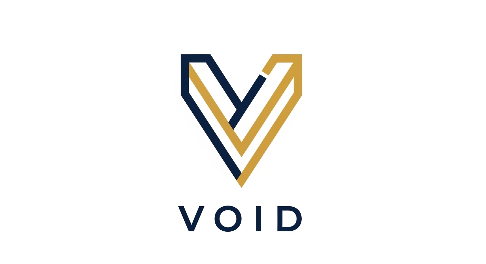
#1 Institutional
"Banking without boundaries" | Navy + Gold
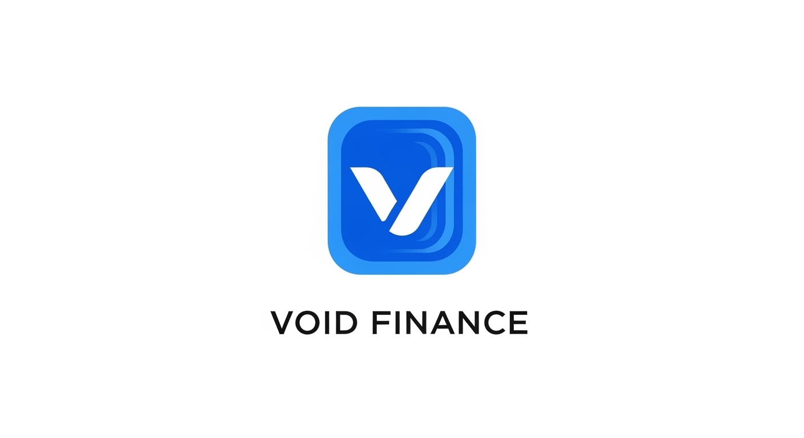
#2 Modern Fintech
"Your money, amplified" | Blue + Cyan
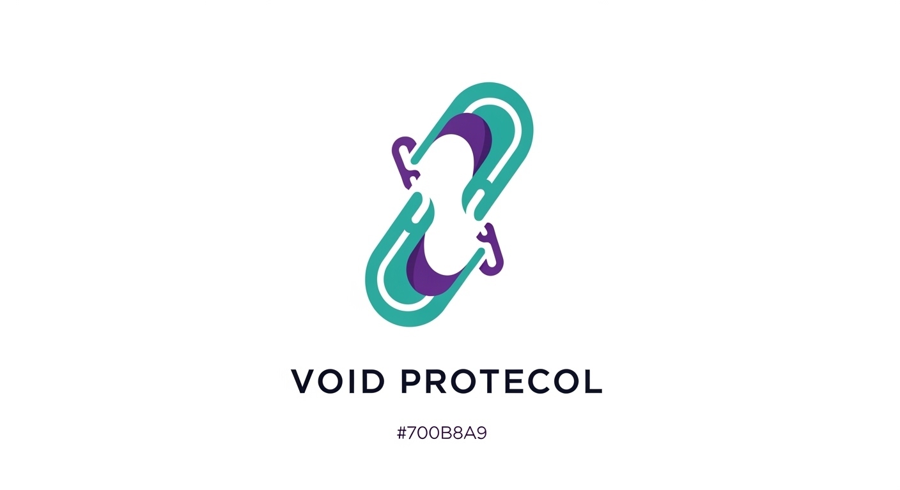
#3 DeFi-Forward
"DeFi Banking" | Charcoal + Teal
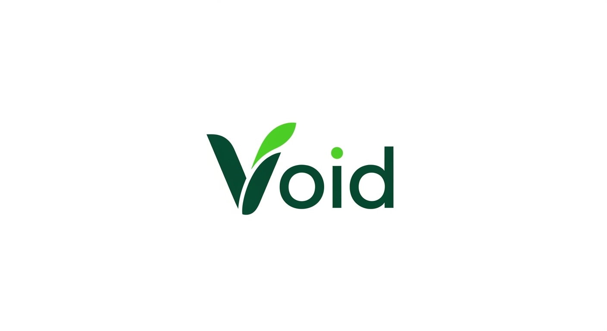
#4 Green Bank
"Built to grow with you" | Forest Green
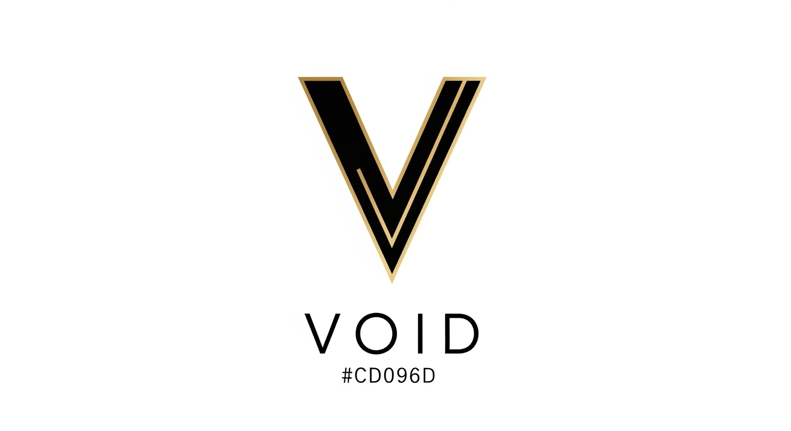
#5 Luxury Standard
"The standard in DeFi" | Black + Gold
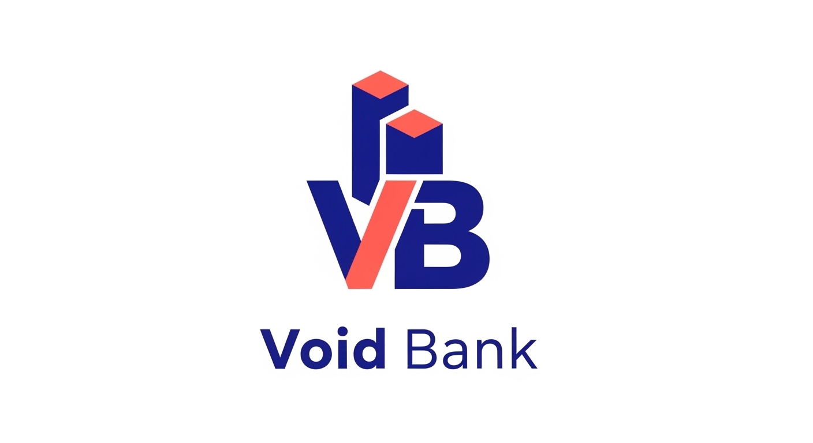
#6 Direct Challenger
"Earn more. Bank better." | Blue + Coral
6c. Logo Concepts (7-12)
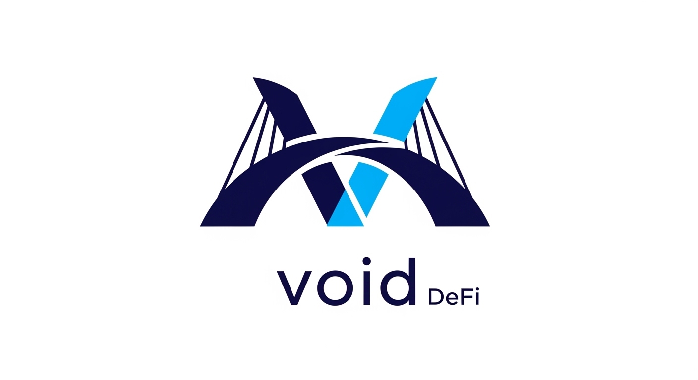
#7 Trust Bridge
"Where trust meets yield" | Midnight + Amber
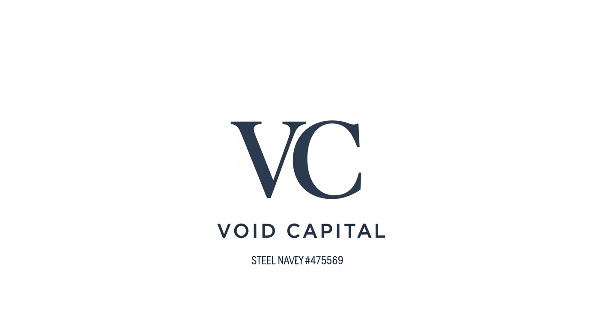
#8 Institutional Grade
"Institutional-grade DeFi" | Slate + Steel
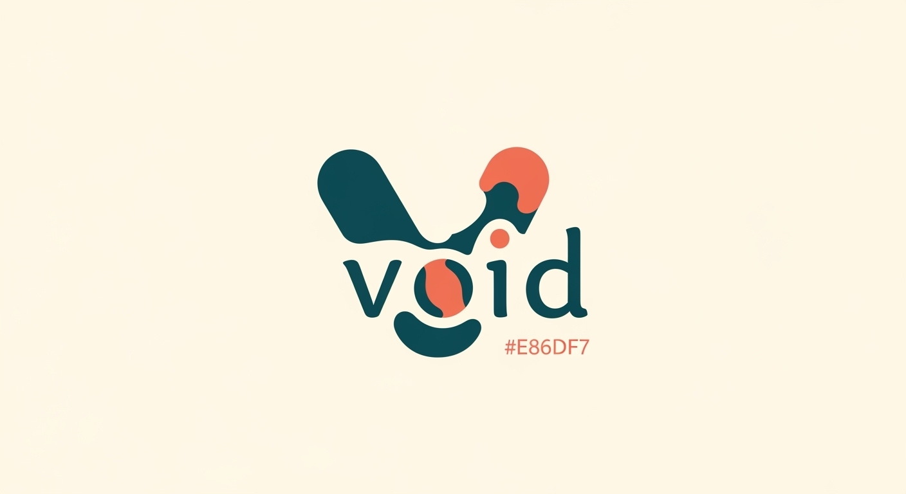
#9 Community Bank
"More than a protocol" | Teal + Coral
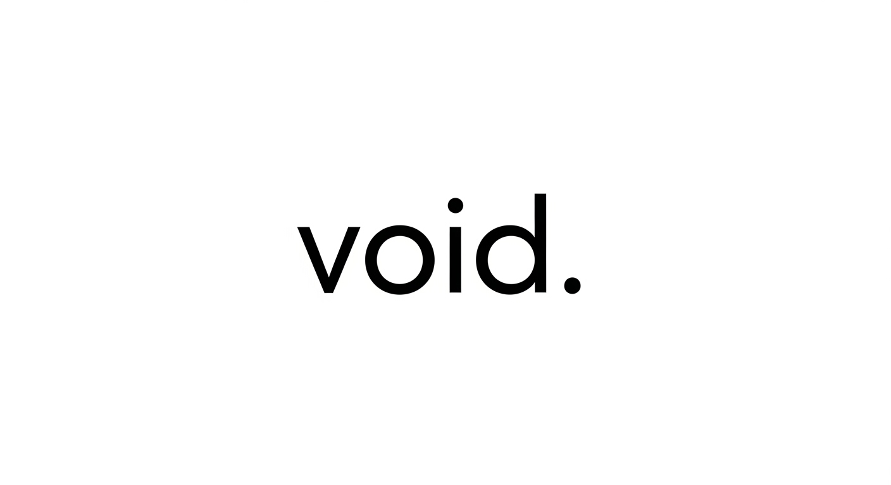
#10 Minimal Modern
"Simply earn" | Black + White + Blue
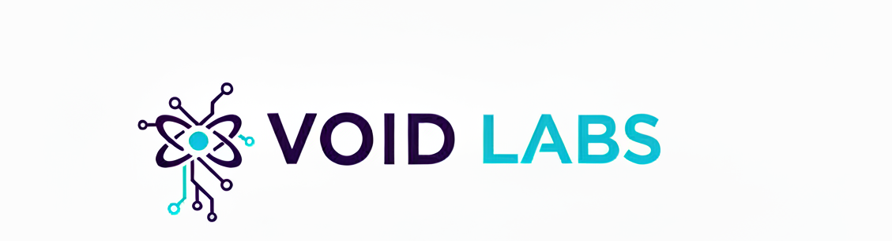
#11 Builder Brand
"We build. You earn." | Indigo + Cyan
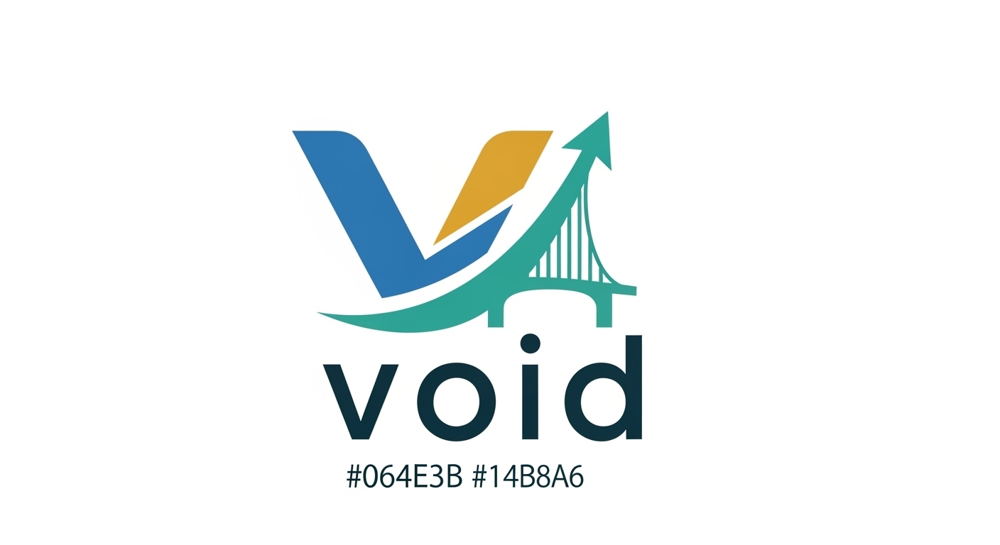
#12 Evolution Brand
"Finance, evolved" | Blue-Green + Gold
Gold-bordered cards (2, 7, 8, 9) = top picks under consideration. All logos are AI-generated concepts for directional reference.
7. All 20 Tagline Options
| # | Tagline | Style | Best For |
|---|
| 1 | "Banking without boundaries" | Institutional | Broad trust appeal |
| 2 | "Your money, amplified" | Fintech | Tech-savvy retail |
| 3 | "DeFi Banking" | Category creation | Owning a new category |
| 4 | "Built to grow with you" | Community | Community-first positioning |
| 5 | "The standard in DeFi" | Luxury | Premium/institutional |
| 6 | "Earn more. Bank better." | Challenger | Direct bank comparison |
| 7 | "Where trust meets yield" | Bridge | TradFi-to-DeFi users |
| 8 | "Institutional-grade DeFi" | Corporate | Institutional/treasury |
| 9 | "More than a protocol" | Human | Community governance |
| 10 | "Simply earn" | Minimal | Simplicity positioning |
| 11 | "We build. You earn." | Builder | Developer credibility |
| 12 | "Finance, evolved" | Evolution | Story-driven marketing |
| 13 | "The yield your bank won't give you" | Provocative | Comparison marketing |
| 14 | "Your assets. Your yield. Your terms." | Ownership | DeFi-native audience |
| 15 | "DeFi that feels like banking" | Accessible | Mainstream onboarding |
| 16 | "Earn like a bank. Own like DeFi." | Hybrid | Bridge positioning |
| 17 | "The new standard for yield" | Authority | Market leadership claim |
| 18 | "Banking, rebuilt on-chain" | Technical | Crypto-native audience |
| 19 | "Where your crypto earns its keep" | Conversational | Social media / casual |
| 20 | "The financial layer of Bittensor" | Ecosystem | Bittensor community |
8. 30-Day Implementation Roadmap
Week-by-week execution plan for rolling out the rebrand in April 2026, timed around the lending platform launch.
Week 1: Foundation (March 31 - April 6)
- Select package (or hybrid), finalize name, lock color palette + typography
- Write tagline and positioning statement
- Commission/design logo mark + wordmark, favicon, social media assets
- Secure domain(s), update X bios and pinned tweets
- Build basic brand kit (logo, colors, fonts, usage guidelines)
Week 2: Design System & Content (April 7 - April 13)
- Build full design system (templates for data cards, announcements, thread headers)
- Rewrite all config files: company.md, voice.md, pillars.md, accounts.md, design-system.md
- Draft new content batch (10-15 posts) in new brand voice
- Wireframe and design landing page (desktop + mobile mockups)
- Write all landing page copy
Week 3: Build & Test (April 14 - April 20)
- Build/update landing page with live data (TVL counter, APY display, yield calculator)
- Update all social media profiles simultaneously (pics, banners, bios)
- Post rebrand announcement thread on @v0idai, satellites follow staggered
- Update Discord, Telegram, LinkedIn branding
- Retrain OpenClaw with new voice.md, generate first week of new-brand content
Week 4: Launch & Amplify (April 21 - April 27)
- Publish rebrand blog post, launch new landing page
- Execute coordinated announcement across all platforms
- Begin new-brand content cadence on all accounts
- Run first engagement content (poll, AMA, or Space)
- Begin comparison content series ("Void vs. traditional savings")
- Track metrics: follower growth, engagement, website traffic, brand mentions
9. Psychology Quick Wins
High-impact, low-effort marketing shifts backed by named psychology research. Implement these regardless of which package you choose.
1
Concrete Number Framing -- Say "$80 per $1,000 per year" instead of "8% APY." Concrete numbers convert 40%+ better. (Slovic, psychic numbing)
2
Loss-Then-Gain Framing -- "Your savings lose 3% to inflation every year. Void fixes that." Validates anxiety, then resolves it. (Kahneman, prospect theory)
3
Anchoring Sequence -- Show TVL first (biggest number), then APY. "$127M secured" makes "8% APY" feel conservative. (Tversky & Kahneman)
4
Live Social Proof Counter -- "12,847 depositors trust Void with $127M" above the fold. Specificity + herd behavior. (Cialdini)
5
Yield Explainer -- "Banks earn 8% on your money and give you 0.5%. We cut out the middleman." Overcomes "too good to be true." (Representativeness heuristic)
6
Progress Bar Onboarding -- Show "Step 2 of 4" during deposit flow. Start at step 2 (visiting = step 1). Drives 40% completion increase. (Zeigarnik effect)
7
Real-Time Yield Counter -- Live-ticking "$0.0023 earned" on dashboard. Single highest-impact retention feature. (Present bias, dopamine)
8
"16x Your Bank" Comparison -- "Void pays 16x what your bank does." Specific multipliers > percentage comparisons. (Anchoring + concrete framing)
9
Default Market Pre-Selection -- Pre-select USDC as recommended. Defaults drive 95%+ of behavior in Johnson & Goldstein's research.
10
Try Before You Connect -- Full dashboard access without wallet connection. Users feel ownership of projected earnings before committing. (Endowment effect)
10. OpenClaw Automation Shifts
Key changes to the marketing automation pipeline to support the rebrand.
| Area | Change |
|---|
| Voice Registers |
Builder-Credibility 35% / Banking-Authority 30% (NEW) / Alpha-Education 25% / Community 10% (up from 5%) |
| Content Pillars |
DeFi Banking 35% / Trust & Security 20% (NEW) / Bridge 15% (down) / Alpha 20% / Community 10% |
| Morning Chain |
Lead with banking-authority register. Daily/Info uses banking vocabulary ("deposits report" not "TVL update") |
| Intelligence Sweep |
Add keywords: "DeFi bank," "crypto banking," "yield account." Monitor: @AaveAave, @MorphoLabs, @SkyEcosystem |
| Satellite Voices |
Daily/Info becomes "Void Daily." Bittensor Ecosystem positions Void as "the DeFi bank of Bittensor." |
| Transition Safety |
Keep DRY_RUN=true. Generate 20+ new-brand posts before going live. Manual review first 5 posts. Then resume automation. |
11. Full Color Palettes
All 12 packages with exact hex codes. Ready for Figma, Canva, or CSS implementation.
| # | Package | Primary | Secondary | Accent | Surface | Success |
|---|
| 1 | Institutional |
#0A1628 |
#FFFFFF |
#C9A96E |
#F8F9FA |
#2D8F5E |
| 2 | Fintech |
#0052FF |
#FFFFFF |
#00D4FF |
#F5F7FA |
#00C853 |
| 3 | DeFi-Forward |
#1C1C2E |
#FAFBFC |
#00B8A9 |
#F4F4F8 |
#00D68F |
| 4 | Green Bank |
#0D4D2B |
#FFFFFF |
#34C759 |
#F5F1EB |
#34C759 |
| 5 | Luxury |
#0D0D0D |
#FAF9F6 |
#C9A96E |
#F5F5F0 |
#2E7D52 |
| 6 | Challenger |
#1A3A5C |
#FFFFFF |
#FF6B6B |
#F0F2F5 |
#22C55E |
| 7 | Trust Bridge |
#0F1B2D |
#FFFFFF |
#2563EB |
#F1F5F9 |
#F59E0B |
| 8 | Institutional |
#0F172A |
#FFFFFF |
#475569 |
#F8FAFC |
#3B82F6 |
| 9 | Community |
#0D4F4F |
#FFFDF7 |
#E8684A |
#FFF8F0 |
#0D4F4F |
| 10 | Minimal |
#000000 |
#FFFFFF |
#0066FF |
#FAFAFA |
#00C48C |
| 11 | Builder |
#1E1B4B |
#FFFFFF |
#06B6D4 |
#F5F3FF |
#06B6D4 |
| 12 | Evolution |
#064E3B |
#FFFFFF |
#14B8A6 |
#F0FDF4 |
#D4A853 |